Part A: Exploring the Power of Flow Models
Part B: Flow Matching from Scratch
Code: Kaggle notebook with all of my work
A flow model turns noise into an image by following a velocity field. At time
t = 0 the image is pure Gaussian noise and at
t = 1 it is a clean image. The network is trained to predict,
at any point along the way, which direction to move to get closer to a clean image.
Generating an image means starting from noise and taking a lot of small steps in
that direction.
In this part I use a pretrained text-to-image flow model, PixNerd-XXL-P16-T2I, which makes 512×512 images. No training is involved. In Section 1 I look at what noisy training inputs look like and denoise them three ways: Gaussian blur, a single model prediction, and Euler sampling. In Section 2 I add classifier-free guidance to make samples follow the prompt more closely. In Section 3 I use the same sampler to edit images, then make visual anagrams and hybrid images by combining velocities from two different prompts.
A noisy training input is a straight-line mix of a clean image x1
and Gaussian noise ε:
x_t = (1 - t) · ε + t · x_1
This doesn't just add noise; it also scales the image down by t. I used
a photo of a jack-o'-lantern I took (with a cigarette, for some reason), sampled one
noise tensor with seed 180, and reused it for all three times. I checked both ends:
interpolate(image, ε, 0) returns the noise exactly and
interpolate(image, ε, 1) returns the image exactly.
def interpolate(image, noise, t):
return (1 - t) * noise + t * image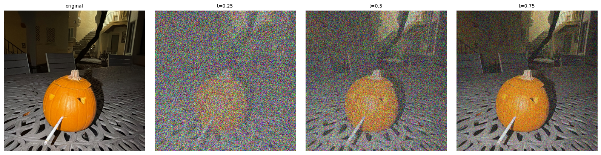
t = 0.25 only the orange
blob of the pumpkin is visible; by t = 0.75 the stairs in
the background are readable.
As a baseline without a learned model, I divide the noisy image by t to
put the image back at full brightness, then blur it with a Gaussian. Dividing by
t fixes the scale but doesn't remove any noise; the blur averages
neighboring pixels so the independent noise partly cancels out. I tried
σ = 1, 2, 4, 8, 16 and kept the one with the lowest
mean squared error against the clean image.
candidates = {s: gaussian_blur(x / t, [int(6*s + 1)] * 2, [s, s]) for s in [1, 2, 4, 8, 16]}
sigma = min(candidates, key=lambda s: ((candidates[s] - image) ** 2).mean())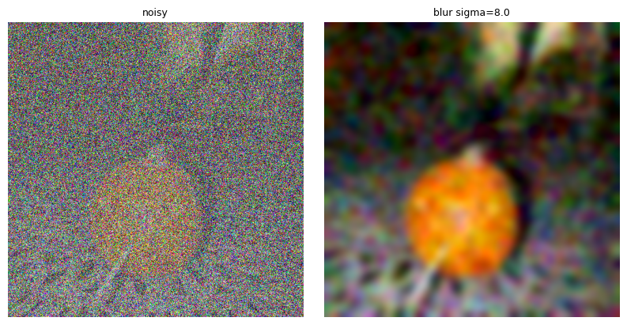
t = 0.25, best σ = 8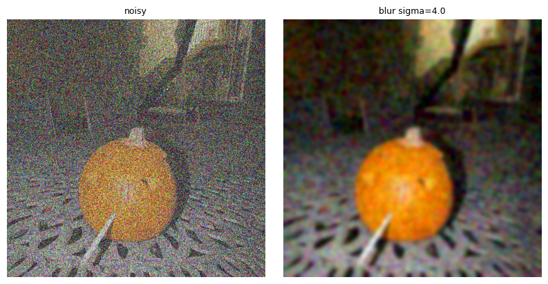
t = 0.50, best σ = 4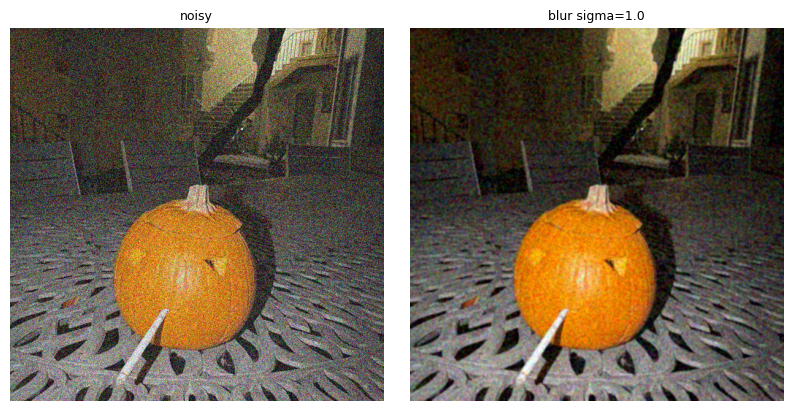
t = 0.75, best σ = 1
The noisier the input, the more blur it takes, and the more detail goes with it. At
t = 0.25 the best result is an orange smudge with colored
blotches around it. At t = 0.75 a small blur is enough, but the
grain is still visible. Blurring can't tell noise from detail, so it always trades
one for the other.
The model predicts the velocity v = x1 − ε,
the direction from noise toward the image. Since the path is a straight line, moving
the remaining distance 1 − t along that direction gives
an estimate of the clean image in one model call. I used the prompt
"a high quality photo".
def one_step_denoise(x, t, condition, predict_velocity):
return x + (1 - t) * predict_velocity(x, t, condition)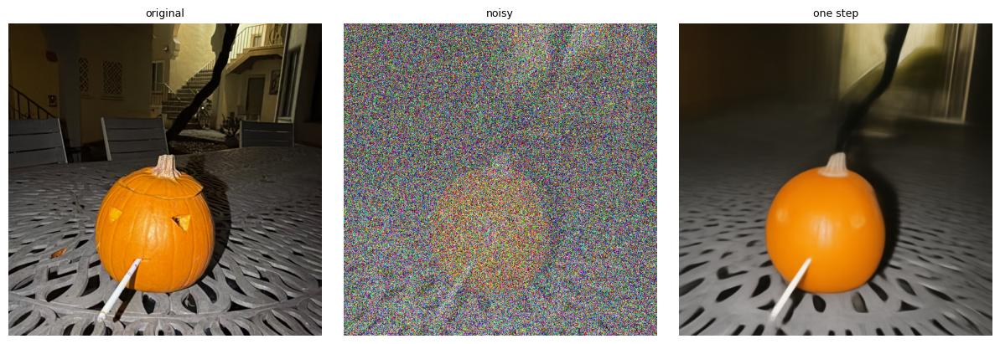
t = 0.25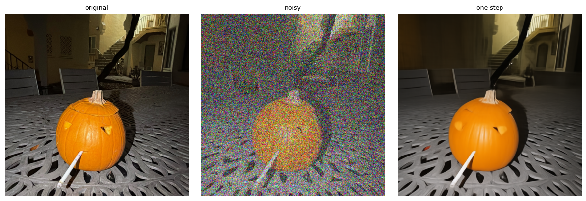
t = 0.50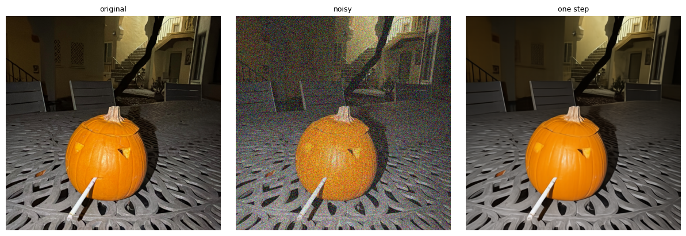
t = 0.75
This is already far better than blurring. At t = 0.25 the
estimate has no grain at all, but it is soft: the pumpkin loses its carved eyes and
ribs, and the stairs turn into a smeared doorway. That makes sense, because with that
much noise many clean images are consistent with the input, and a single prediction
lands near their average, which looks blurry. At t = 0.75 the
estimate is close to the original.
Because I know the noise I added, I also know the exact update that would recover my
image: (1 − t)(x1 − ε).
Below I show the model's predicted update next to that ground truth, with zero mapped to
middle gray on one shared color scale. The error map is the RMS over RGB of the
difference between the two updates, one value per pixel, with the same color limits
at every time.
@torch.inference_mode()
def velocity_diagnostics(x_t, t, clean_image, epsilon, condition, predict_velocity):
predict_update = (1 - t) * predict_velocity(x_t, t, condition)
ground_truth_update = (1 - t) * (clean_image - epsilon)
error_map = torch.sqrt(((predict_update - ground_truth_update) ** 2).mean(dim=1)) # (B, H, W)
return predict_update, ground_truth_update, error_map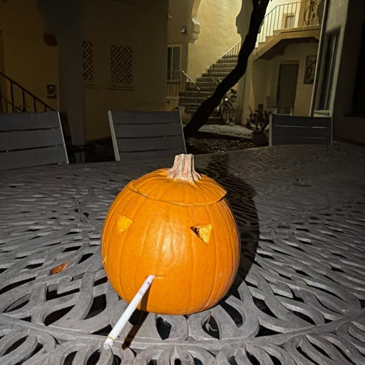
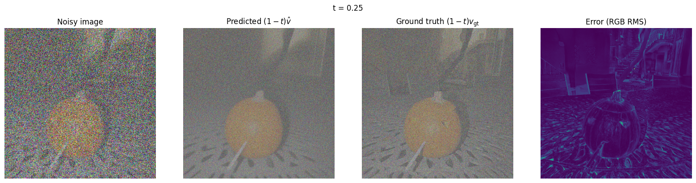
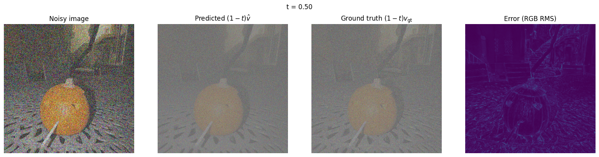
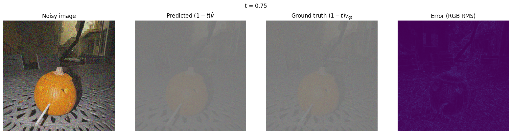
The predicted and true updates look almost the same at a glance, since both are mostly
"image minus noise." Both fade toward gray as t grows, because there is less
distance left to travel: at t = 0.75 the update is a third the size
it is at t = 0.25. The difference between them shows up in the
error maps. At
t = 0.25 the error sits on edges and fine texture: the outline of
the pumpkin, the stair railings, and the pattern on the table. Flat areas like the
walls are nearly zero. These are exactly the details the one-step estimate in 1.3 lost.
As t grows, the error map fades, both because the model can see more of the
image and because the remaining distance 1 − t shrinks.
A single prediction is a guess made from one point. Instead I take a small step, ask the model for a new velocity at the new point, and repeat:
x_{t+h} = x_t + h · v(x_t, t)
I compute the number of steps up front and set the last step to land exactly on
t = 1, so a start time that isn't a multiple of the step size
still finishes in the right place. I tested this with a constant velocity of 1, where
the answer is known: starting from 0 the result should be 1 − tstart.
Starts of 0, 0.5, and 0.93 took 50, 25, and 4 steps and all matched.
@torch.inference_mode()
def euler_sample(x_start, t_start, step_size, velocity):
n_steps = math.ceil(round((1.0 - t_start) / step_size, 6))
x, t = x_start, t_start
states = [(t, x.clone())]
for k in range(1, n_steps + 1):
t_next = 1.0 if k == n_steps else t_start + k * step_size
v = velocity(x, t)
x = x + (t_next - t) * v
t = t_next
if k % 5 == 0 or k == n_steps:
states.append((t, x.clone()))
return x, states
The round(..., 6) guards against floating point: (1 − 0.5) / 0.02
can come out as 25.000000000000004, and ceil would turn that into 26 steps.
Starting from the t = 0.5 input with h = 0.02
gives 25 updates:
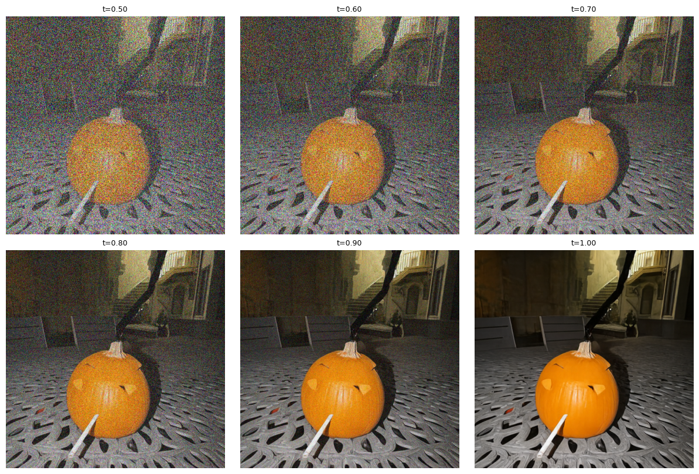
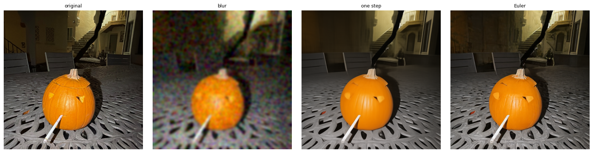
t = 0.5 input.Blur gives a mushy result with leftover color noise. One-step denoising is clean but waxy, with the pumpkin's ribs and the background brickwork smoothed out. Euler sampling is the sharpest, and it brings back the carved eyes, the ribs, and the texture on the table. It isn't a copy of the original, though. Some details are new: the eyes are a slightly different shape, there's a red leaf on the table that isn't in my photo, and the left wall goes dark. The model fills in whatever the noise destroyed with something plausible, not with what was actually there.
Starting at t = 0 from pure noise, the same sampler generates an
image from nothing. These are five samples with "a high quality photo", 50
Euler steps each, seeds 180–184.

All five are portraits of people. The generic prompt seems to pull the model toward portrait photography, probably because a lot of the photos described as "high quality" in its training data are portraits. The results aren't good: seed 180 has no face, seed 183's face is melted, and seed 181's torso doesn't make sense. Only seed 184 looks like a normal photo.
CFG runs the model twice at every step, once with the prompt and once with an empty prompt, and pushes further in the direction where they disagree:
v_cfg = v_c + w · (v_c - v_u)
The difference vc − vu is what the
prompt adds over a generic image, and w scales it up. With
w = 0 this is the plain conditional prediction, which I checked
returns exactly vc. I used w = 7 and the
same five noises as 1.6.
def cfg_velocity(x, t, condition, w, predict_velocity, null_condition=''):
v_c = predict_velocity(x, t, condition)
v_u = predict_velocity(x, t, null_condition)
return v_c + w * (v_c - v_u)
w = 7Every face is fixed. All five are clean, sharp, front-facing studio headshots with believable skin and eyes. The cost is variety: without guidance the samples had different framings, lighting, and poses, and with guidance they all look like the same kind of photo. The layout still comes from the starting noise. Seed 182 has a hand raised to the face in both versions, and the light or dark backgrounds mostly carry over too.
To edit an image, I noise it to some starting time t and run the CFG
sampler from there to 1 (SDEdit). The model has to invent whatever the noise
destroyed, so a small starting time (lots of noise) gives a big edit and a large
starting time gives a small one. All edits in this section use
w = 7, h = 0.02, and noise seed 180.
def edit(image, noise, t_start, condition, predict_velocity, w=7, step_size=0.02):
x_start = interpolate(image, noise, t_start)
velocity = lambda x, t: cfg_velocity(x, t, condition, w, predict_velocity, null_condition)
x_final, _ = euler_sample(x_start, t_start, step_size, velocity)
return x_final
At 0.02 all that survives is a pale vertical shape against blue, which becomes a white column in front of a blurry background. At 0.04–0.06 it turns into a tapered spire with trees. At 0.10–0.14 it is an obelisk with one window where the belfry should be. The belfry arches return at 0.25, and at 0.50 the clock is back and the result is almost the original.
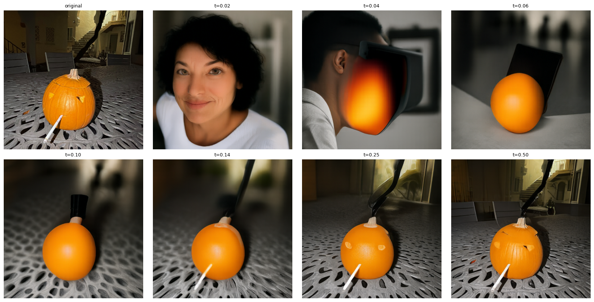
With the most noise the model goes back to its favorite subject from 1.6 and draws a portrait. At 0.04 the orange blob becomes a glowing visor on a man's face. From 0.06 on it's an orange ball, then an orange with a stem on the table, and the cigarette comes back at 0.14. The carved eyes appear at 0.25.
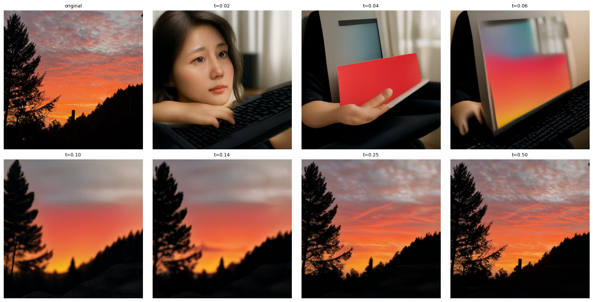
At 0.02–0.06 the model reads the warm red band as a red folder or screen and builds an indoor scene with a person and a keyboard around it. At 0.10 it switches to a sunset with blurry tree silhouettes, and from 0.25 on it closely matches the photo, down to the clouds.
The same procedure, on one image from the web and two drawings of mine.
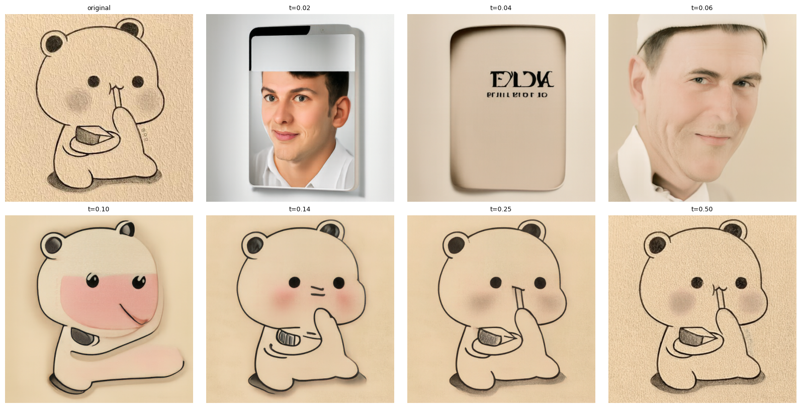
The low starting times ignore the bear and produce portraits of men and a card with nonsense text on it. At 0.10 the bear comes back as a puffy, sticker-like version with pink cheeks, and by 0.14 it is a clean version of the original cartoon.
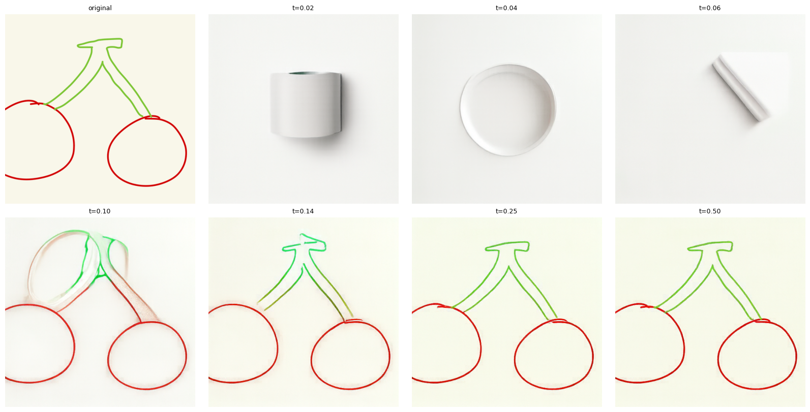
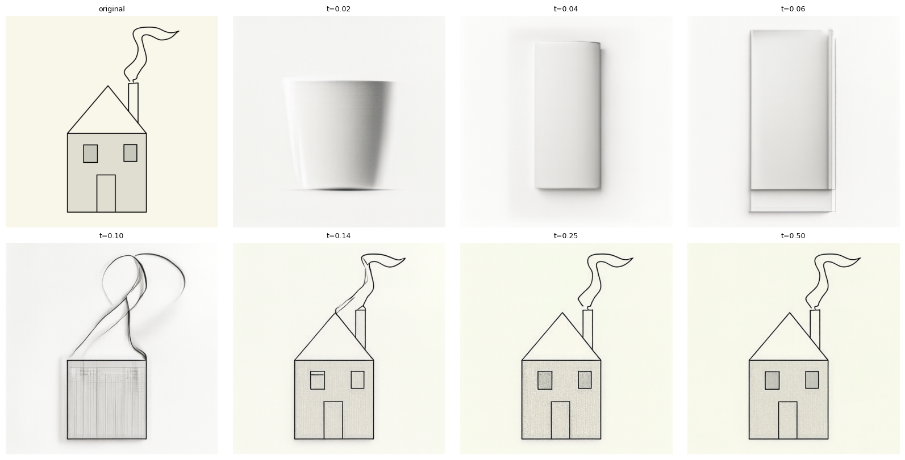
I hoped the drawings would turn into realistic cherries and a realistic house, but that didn't happen. Both drawings are thin lines on a mostly blank cream canvas, and with heavy noise the lines are gone, so all the model sees is a light, empty image. It turns that into a white product shot: a roll, a plate, a cup, a white box. At 0.10 the lines start coming back (the house gets its smoke but loses its roof, and the cherry stem turns into a glassy loop), and by 0.14 both drawings are back as drawings. There is no starting time where the model keeps the shapes but makes them realistic. The drawings have too little color and shading for the shapes to survive the noise. A filled-in drawing with solid colors would probably work better.
Same procedure, but with a prompt that describes the edit I want instead of "a high quality photo".

At 0.02 the prompt takes over completely: a full launch scene with a gantry tower. From 0.04 on the rocket sits exactly where the Campanile was, and the trees become launch-pad scaffolding. My favorite is 0.25, where the rocket still has the Campanile's belfry arches near the top. At 0.50 the tower wins again.
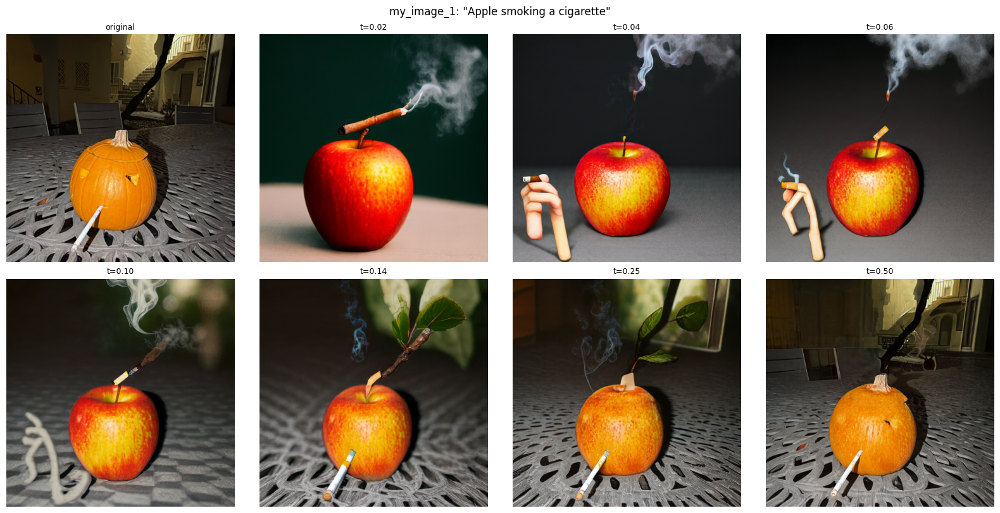
The pumpkin turns into an apple at every starting time up to 0.25. At 0.02 the cigarette becomes the apple's stem, and at 0.04–0.06 the model adds a hand holding one next to the apple. From 0.14 on, the cigarette from my photo is kept in its original spot and the model just swaps the pumpkin for an apple and adds smoke and leaves. At 0.25 the apple is still a bit orange, and at 0.50 it's a pumpkin again.
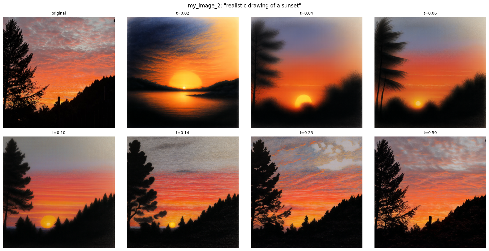
This is the opposite direction from 3.1's drawings: a photo turned into a drawing. Every starting time adds visible pencil strokes. With more noise the model also adds a sun the original doesn't have (my photo was taken after sunset), and at 0.02 it moves the scene to a lake. At 0.25 the composition is my photo's but the clouds are drawn in colored pencil.
A visual anagram looks like one thing upright and another upside down. At each Euler step I compute the CFG velocity for prompt A on the image, and the CFG velocity for prompt B on the image rotated 180°, rotated back. The step uses the average, so the image is pulled toward A when upright and toward B when flipped at the same time. Rotating by 180° flips both spatial axes, not just one.
def visual_anagrams(noise, condition_a, condition_b, predict_velocity, w=7, step_size=0.02):
velocity = lambda x, t: 0.5 * (
cfg_velocity(x, t, condition_a, w, predict_velocity, null_condition)
+ rotate180(cfg_velocity(rotate180(x), t, condition_b, w, predict_velocity, null_condition))
)
x_final, _ = euler_sample(noise, 0.0, step_size, velocity)
return x_finalThe bright spot on the old man's forehead is the fire when flipped, and the folds of his face become the lit-up people sitting around it. Upright, you can see the campfire people's faces upside down at his chin if you look for them, but the dark, warm palette that fits both prompts helps hide them.

The horse view works better than the village view. Upside down, the mountain peaks become the horse's legs and the village rooftops become its back. Upright the mountains and houses read clearly, but the horse's head shows at the bottom of the village, with its eye visible.
This is Project 2's hybrid images done by the sampler instead of by hand. At every step I take the low frequencies of the velocity for the "distant" prompt and the high frequencies of the velocity for the "close" prompt. The low-pass filter is a Gaussian blur with kernel size 265 and σ = 16, and the high-pass is the velocity minus its low-pass.
def make_hybrids(noise, condition_a, condition_b, predict_velocity, w=7, step_size=0.02):
def velocity(x, t):
v_a = cfg_velocity(x, t, condition_a, w, predict_velocity, null_condition)
v_b = cfg_velocity(x, t, condition_b, w, predict_velocity, null_condition)
return lowpass(v_a) + v_b - lowpass(v_b)
x_final, _ = euler_sample(noise, 0.0, step_size, velocity)
return x_finalEach result is shown at full size and at 64×64, which is roughly what it looks like from across the room.


Up close both images are clearly a waterfall and a forest. From far away the distant prompt only shows up as the overall shape. The waterfall sits inside a rounded, skull-like outline with the dark cliff where the jaw would be, and the forest's tree crowns make up a rounded head with two faint ears at the top. In both cases the distant subject is weaker than the close one. The skull and cat each come only from the blurred part of the velocity, and the high frequencies of the close prompt are strong enough to draw their own scene over them.
Everything in this project uses the same sampler. Denoising, generating from scratch, editing, anagrams, and hybrids only differ in where the sampler starts and how the velocity is computed at each step. Editing changes the start (a noised image instead of pure noise), and CFG, anagrams, and hybrids change the velocity (two predictions combined into one). The most surprising part was how much of the result is decided by whatever survives the noise: a flat drawing turns into a white product photo, and a red sky turns into a red folder, because those are the shapes and colors the model can still see.
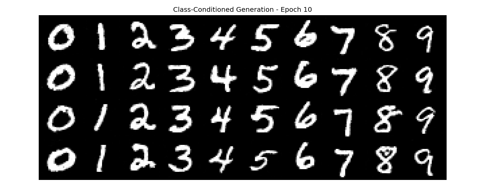
Code: Kaggle notebook with all of my Part B work
In Part A the model was already trained. Here I train my own on MNIST. First I build a UNet and train it to denoise digits in a single step, and show why that can't generate new images. Then I add time conditioning and train it as a flow matching model, which generates digits by taking many small steps from noise. Finally I add class conditioning and classifier-free guidance so I can choose which digit to generate. Everything was trained on a Kaggle T4 GPU with seed 180.
The UNet downsamples a 28×28 digit twice (28 → 14 → 7), squeezes the 7×7 map to a single vector with average pooling, then upsamples back. At each resolution the decoder concatenates the matching encoder features (the skip connections), so fine detail doesn't have to pass through the 1×1 bottleneck. Every basic op is a convolution followed by BatchNorm and GELU, and each block stacks two 3×3 convolutions after the resolution change for more capacity.
def forward(self, x):
e0 = self.init_block(x) # D x 28 x 28
e1 = self.down1(e0) # D x 14 x 14
e2 = self.down2(e1) # 2D x 7 x 7
u0 = self.unflatten(self.flatten(e2)) # 2D x 7 x 7
u1 = self.up1(torch.cat([u0, e2], dim=1)) # D x 14 x 14
u2 = self.up2(torch.cat([u1, e1], dim=1)) # D x 28 x 28
u3 = self.final_block(torch.cat([u2, e0], dim=1))
return self.out(u3)To make training pairs I add Gaussian noise to a clean digit:
z = x + σ · ε, ε ~ N(0, I)Below are ten training digits, one noise sample per digit, at σ = 0, 0.2, 0.4, 0.5, 0.6, 0.8, 1.0 (top to bottom). The same noise is reused down each column, so only the strength changes.
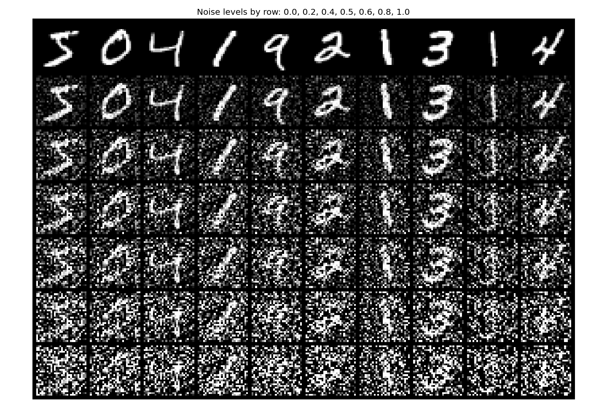
I trained a D = 128 UNet for 5 epochs with Adam (learning rate 1e-4), batch size 256, and σ = 0.5. The noise is drawn fresh for every batch, so each epoch the network sees new noisy versions of the same digits. The loss is the MSE between the output and the clean digit.
noisy_images = images + noise_level * torch.randn_like(images)
loss = criterion(model(noisy_images), images)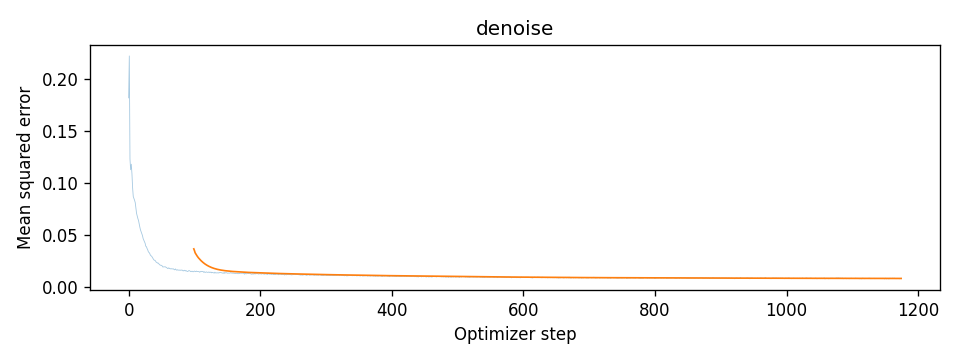
Rows are the clean test digit, the noisy input at σ = 0.5, and the denoiser's output.
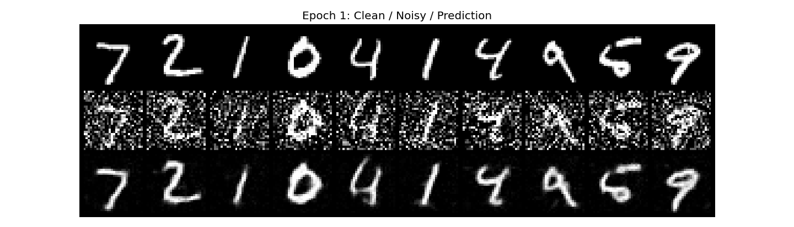
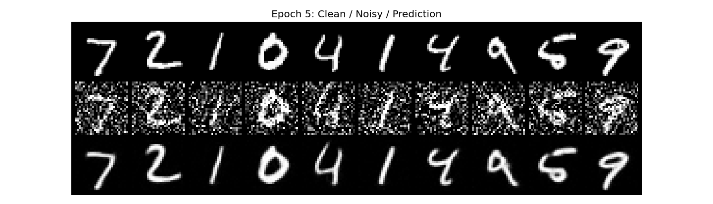
After one epoch every digit is already recognizable, but the strokes are uneven and there's a gray haze around them; the first 4 has a gap in its stroke and the 9s are blotchy. After five epochs the outputs are clean white strokes on black and look very close to the originals.
The denoiser only ever saw σ = 0.5. Here are ten test digits at the same seven noise levels as above, with one noise sample per digit, and what the denoiser makes of each.
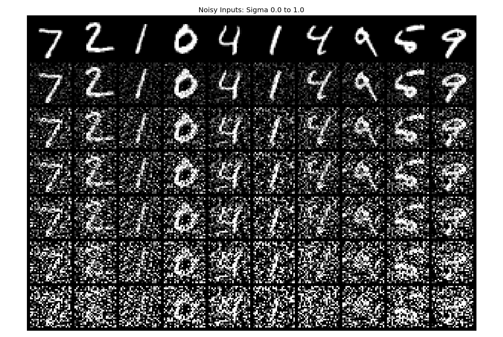
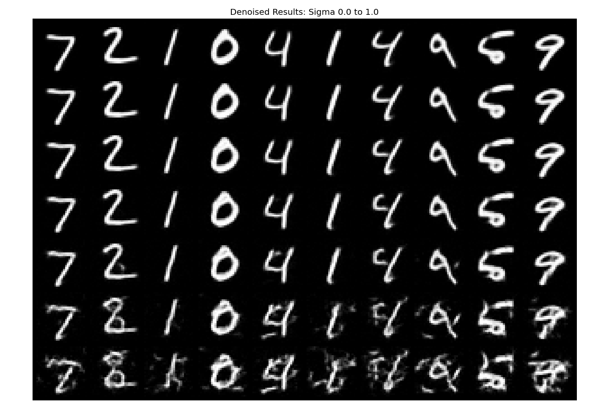
Less noise than it was trained on is no problem. Even at σ = 0 it returns the digit almost unchanged. More noise is where it breaks. At 0.6 there are a few stray specks, at 0.8 the 2 picks up an extra loop and looks like an 8, and at 1.0 several digits turn into different ones: the 2 and 0 become 8s and the 1s become scribbles. The model learned to remove a specific amount of noise, so when there's more than that, it reads the leftover noise as strokes.
To use a denoiser as a generator, the input would have to be pure noise. I trained a
fresh D = 128 UNet the same way as in 1.2.1 (5 epochs, Adam 1e-4, batch 256),
except the input is ε ~ N(0, I) with no digit in
it, and the target is still the clean digit.
outputs = pure_model(torch.randn_like(images))
loss = pure_criterion(outputs, images)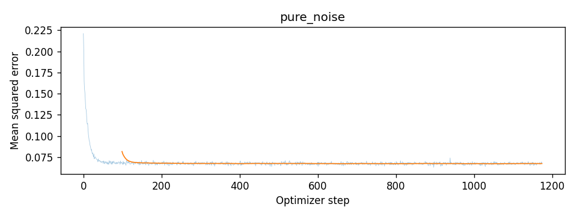
Top row: the pure noise input. Bottom row: the model's output.
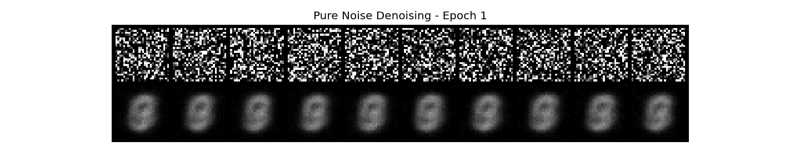
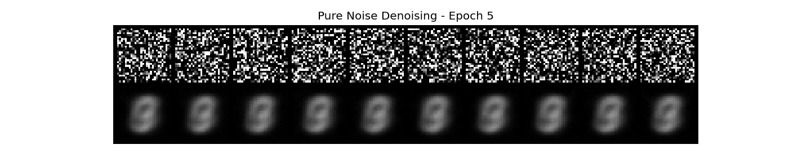
Every input produces the same output: a blurry gray blob in the middle of the frame. It doesn't look like any single digit. It looks like many digits stacked on top of each other, with a bright oval outline like a 0 and faint crossing strokes like a 3, 8, or 9 inside it. Between epochs 1 and 5 it only gets a little smoother.
This is what MSE should produce here. The input noise has nothing to do with which digit is the target, so there is nothing in the input the model can use. The best it can do is output the one image that is closest on average to every training digit, and with squared error that is their pixel-wise mean, the centroid of the training set. Pixels in the center are white in most digits, so they come out bright, and the edges are almost always black. That's also why the loss stops at 0.067: that is roughly the variance of MNIST around its mean, and no output can do better. Generating new images needs something other than a single denoising step.
Flow matching replaces the single jump with a path. A noisy sample at time
t is a straight-line mix of noise x0 and a clean
digit x1, and the target is the velocity along that line, which
is the same at every t:
x_t = (1 - t) · x_0 + t · x_1
u = x_1 - x_0
The model now has to know how far along the path it is, so I feed t into
the UNet. t goes through two small fully connected blocks
(Linear → GELU → Linear), one producing a
2D-channel vector and the other a D-channel vector. These scale the decoder features
channel by channel, right after the unflatten and right after the first upsampling block.
t1 = self.fc1_t(t).reshape(-1, 2 * D, 1, 1)
t2 = self.fc2_t(t).reshape(-1, D, 1, 1)
...
u0 = self.unflatten(self.flatten(e2)) * t1
u1 = self.up1(torch.cat([u0, e2], dim=1)) * t2
For each batch I draw new noise and a random t per image, build
xt, and regress the UNet output onto
x1 − x0. I used D = 64,
batch size 64, 10 epochs, and Adam starting at 1e-2 with an exponential decay of
γ = 0.11/10 per epoch, so the learning rate
ends ten times lower than it started.
def time_fm_forward(unet, x_1, num_ts):
x_0 = torch.randn_like(x_1)
t = torch.rand(x_1.shape[0], device=x_1.device)
t_img = t[:, None, None, None]
x_t = (1 - t_img) * x_0 + t_img * x_1
return F.mse_loss(unet(x_t, t), x_1 - x_0)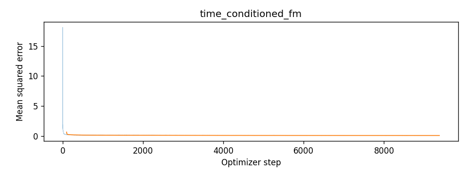
This loss can't go to zero the way the denoiser's could. From a single noisy
xt there are many clean digits and noise samples that could have
produced it, so the best the model can do is predict their average velocity.
To generate, I start from pure noise at t = 0 and take 50 Euler
steps of size 1/50, asking the model for the velocity at each step. The 40 samples below
all use the same starting noise (seed 180), so the same grid position is the same
starting point at every epoch.
x = torch.randn(N, 1, H, W, generator=torch.Generator().manual_seed(seed)).to(device)
dt = 1.0 / num_ts
for i in range(num_ts):
t = torch.full((N,), i * dt, device=device)
x = x + dt * unet(x, t)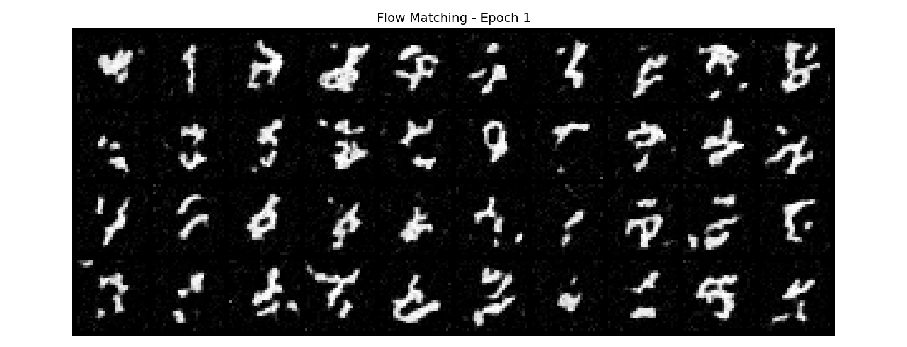
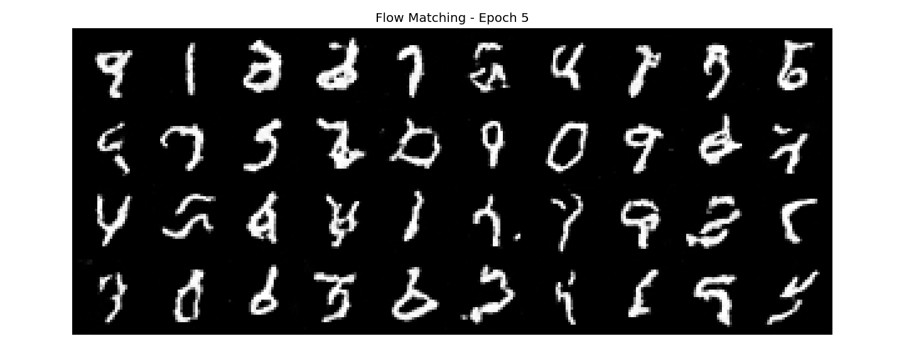
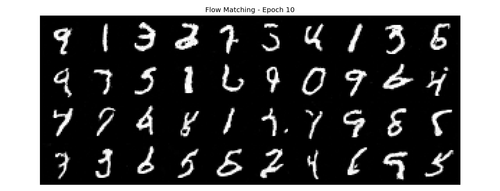
Unlike the pure-noise denoiser, every sample is different, so the model really is generating. After epoch 1 the samples are thick, broken strokes, and only a few (a 1, a 0-like loop) could pass as digits. By epoch 5 the strokes are thin and continuous like handwriting, but many shapes are still a mix of two digits. By epoch 10 most samples are readable: 9, 1, 3, 7, 5, 0, 6, and others. A few are still wrong, such as the fourth sample in the top row that's part 2 and part 8, and the 4 in the third row with a stray dot next to it. Because the starting noise is fixed, you can follow one sample improving across epochs; the third sample in the top row goes from a squiggle to a backwards “a” to a clean 3.
To choose which digit gets generated, I also condition on the class. The class is
a one-hot vector c that goes through two more FC blocks. Its outputs scale
the same two decoder features, and the time embeddings are now added as a shift:
u0 = c1 * u0 + t1
u1 = c2 * u1 + t2
During training I drop the class 10% of the time by setting c to all
zeros. The same network then also learns an unconditional model, which classifier-free
guidance needs.
c = F.one_hot(c.long(), self.num_classes).to(x)
if mask is not None:
c = c * mask.reshape(batch_size, 1).to(x)Same setup as 2.2 (D = 64, batch 64, Adam 1e-2 with exponential decay, 10 epochs), with the digit label passed in and a random mask for the 10% class dropout.
mask = (torch.rand(batch_size, device=x_1.device) >= p_uncond).float()
predicted_velocity = unet(x_t, c, t, mask)
loss = F.mse_loss(predicted_velocity, x_1 - x_0)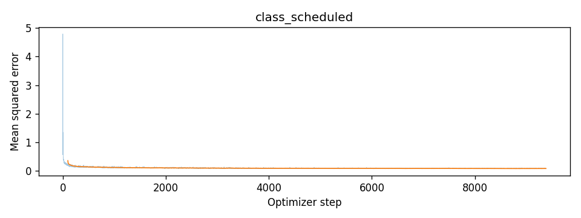
The lower loss makes sense: once the model knows which digit it is making, there are
far fewer clean images that could match a given xt, so the
velocity is easier to predict.
Sampling uses 300 Euler steps with classifier-free guidance. At every step I run the
model once with the class and once with it masked out, and push past the conditional
prediction with a guidance scale of γ = 5:
v_cond = unet(x, c, t, cond_mask)
v_uncond = unet(x, c, t, uncond_mask)
velocity = v_uncond + guidance_scale * (v_cond - v_uncond)
x = x + dt * velocityEach column is one digit class, with four samples each, all from seed 180.
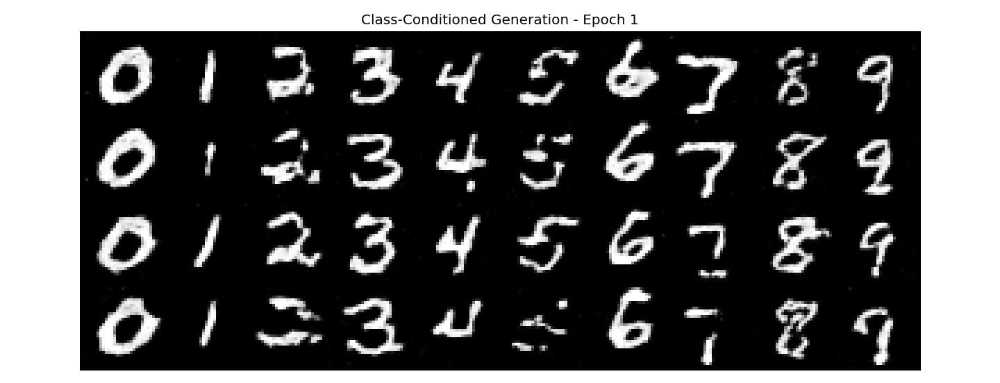
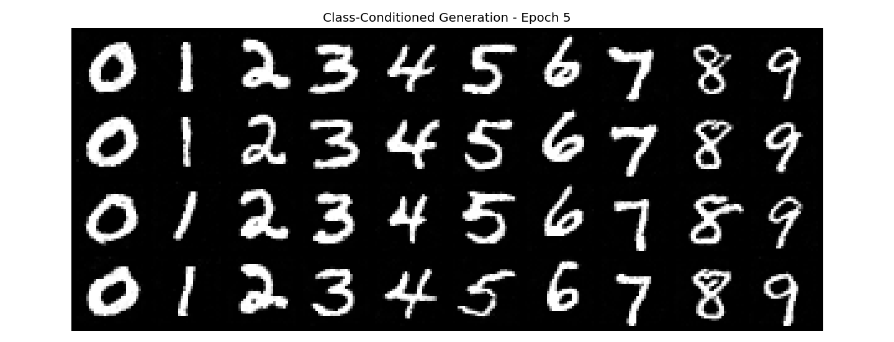
Class conditioning makes a big difference. After one epoch nearly every sample is already the right digit, which the time-only model couldn't manage even after ten. The harder classes are still messy at epoch 1: two of the 5s fall apart into dashes, two 2s are flat squiggles, and one 7 is split into two pieces. By epoch 5 all 40 are clean and correct, and epoch 10 is nearly identical, with slightly smoother strokes. The four samples in each column also have different slants, widths, and styles (a 4 with an open top and one with a closed top, a 2 with and without a loop), so guidance hasn't collapsed each class to one shape.
Without the scheduler the learning rate stays fixed for all 10 epochs. 1e-2 is too large
to keep for that long, and 1e-3 (where the scheduler ends) would be slow at the start. I
used a constant 3e-3, which is about the geometric mean of the scheduler's
start and end rates (√(10−2·10−3) ≈ 3.2e-3).
Everything else was the same, including the seed.
constant_unet, constant_losses = train_class_model(
learning_rate=3e-3,
use_scheduler=False,
name="class_no_scheduler"
)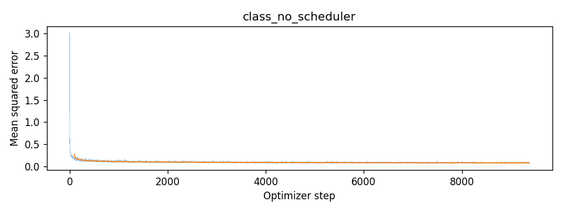
| Epoch | Scheduled (1e-2 → 1e-3) | Constant 3e-3 |
|---|---|---|
| 1 | 0.1619 | 0.1446 |
| 5 | 0.0900 | 0.0911 |
| 10 | 0.0822 | 0.0848 |
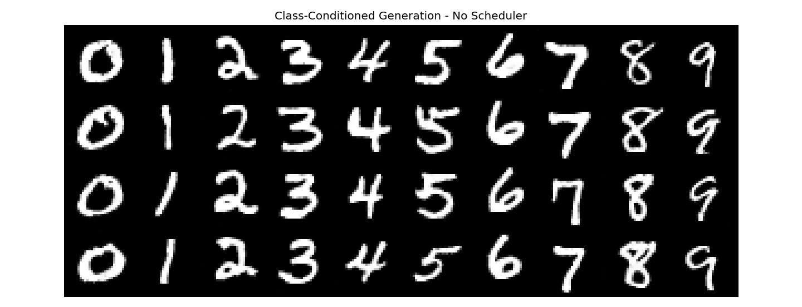
The constant rate starts out ahead, since 1e-2 is aggressive for the first epoch. The scheduler catches up by epoch 5 and finishes slightly lower, because by the end its learning rate is three times smaller and it can settle more precisely. In the samples the difference is hard to see. All 40 digits are correct and clean in both, and since they share a seed most of them have the same pose and style. I'd call the performance the same, and the constant rate is one less thing to tune.